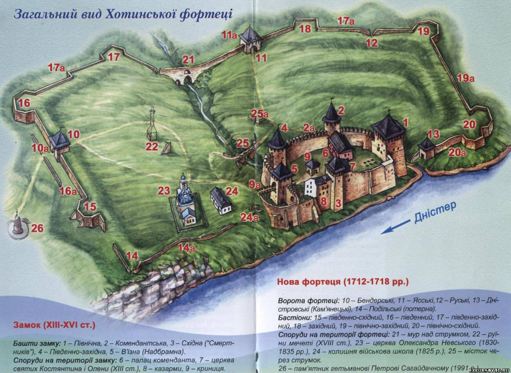

Зрозуміти
Хотин – старовинна фортеця, заснована ранніми слов’янами поблизу важливої переправи на Середньому Дністрі на перетині торгових шляхів. "Град на Днестре реце Хотень", як говориться в одному з древніх літописів, височить серед скель над плесом Дністра, а сама цитадель розміщена в низині, оточеній з трьох сторін узвишшями. Хотин входив до складу Київської Русі і Галицько-Волинської держави, в середні віки був великим ремісничим і торговим пунктом, а також неодноразово ставав ареною запеклих битв.
Пізнати
Хотинська фортеця у свій час була однією з наймогутніших у Східній Європі, під її стінами не раз сходилися численні армії. Внаслідок свого стратегічного прикордонного розташування твердиня протягом століть перебувала у складі різних держав (Київської Русі, Галицько-Волинського, Молдавського князівств; Османської, Австро-Угорської, Російської імперій), що великою мірою обумовило її архітектурний стиль, який формувався під впливом загальних європейських тенденцій, пов’язаних з розвитком воєнно-оборонного зодчества, але також набув своєрідного етнічного забарвлення.
Писемні джерела не містять відомостей про час будівництва як першого кам’яного замку, так і донині існуючої цитаделі. «На Дністрі Хотінь» згадується в числі волоських міст у літописному «Списку руських міст далеких і ближніх», складеному наприкінці XIV ст., але археологічні дослідження дають можливість говорити про виникнення міського посаду навколо укріпленого замку-дитинця у давньоруський час. Слов’янське селище на високому скельному дністровському мисі, можливо, вже під захистом нескладних дерев’яних укріплень з напільного боку, існувало у VIII-IX ст. У Х-ХІ ст. поселення займало значно більшу площу (близько 20 га), розташовуючись, судячи зі знахідок залишків жител і ліпного посуду, і на сусідніх пагорбах.
Найдавніший замок збудували задовго до появи не лише артилерії, але й каменеметальних пристроїв. Перші надійні фортифікації у вигляді земляного валу з дерев’яними заборолами і видовбаного упоперек скелястого мису ровом, постали, вірогідно, на межі Х-ХІ ст. Саме тоді київський князь Володимир Святославович після походу на хорватські землі приєднує до Русі й територію слов’ян-тиверців, зводячи нові фортеці як центри княжої влади і місця перебування намісників. Завдяки вигідному стратегічному положенню Хотин відіграв значну роль в історії України, Молдови, Польщі, Туреччини та Російської імперії.
З X століття Хотин входив до складу Київської Русі, згодом — до Галицько-Волинського князівства.
Від 1373 р. Хотин увійшов до складу Молдови. Упродовж XV–XVI ст. Хотинська фортеця була столицею Мультан, резиденцією молдовських господарів.
У XVI ст. деякий час перебував під владою Польщі, потім знову Молдовського князівства (у васальній залежності від турків), у XVIII ст. Хотинська округа була безпосередньо включена до складу Османської імперії.
У 1615 р. польські війська зайняли Хотин. Після Цецорської битви 1620 р. між Польщею та Туреччиною, в ході якої польські війська були розбиті, а великий коронний гетьман Станіслав Жолкевський загинув, Хотин став головним форпостом оборони від турецької навали.
У вересні — на початку жовтня 1621 року біля стін Хотинської фортеці проходили події знаменитої Хотинської битви, яка прославила запорозьких козаків і їхнього гетьмана Петра Конашевича-Сагайдачного і стала зламним моментом в історії Османської імперії. У ході Хотинської війни польське-литовське військо великого гетьмана литовського Яна Кароля Ходкевича (35 тисяч вояків) та Запорізьке військо гетьмана Петра Сагайдачного (40 тисяч козаків) відбили численні атаки 200-тисячної турецько-татарської армії.
Впродовж XVII століття Хотин переходив з рук у руки, ним володіли і польські королі, і турецькі феодали, неодноразово місто визволяли запорозькі козаки. Під час визвольної війни у Хотині 1650–1653 рр. перебували війська Богдана Хмельницького.
11 листопада 1673 р. коронний гетьман Ян III Собеський на чолі 30-тисячного польсько-литовсько-козацького війська вщент розгромив у Хотині 40-тисячну турецьку армію. Тільки на початку XVIII століття туркам вдалося остаточно закріпитися в Хотині і в фортеці.
Хоча в XVIII–XIX ст. фортеця поступово втрачає своє оборонне значення, під її мурами продовжують кипіти битви.
Після російсько-турецької війни 1806–1812 рр. Хотин увійшов до складу Росії і став повітовим центром Бессарабської губернії. Відступаючи, турки майже повністю знищили Хотин.
В листопаді 1918 року Хотинщину зайняли румунські війська. Під час Другої Світової війни Хотин був під румунською окупацією (6 липня 1941 р. — 4 квітня 1944 р.). Після війни Хотин залишився в складі УРСР.
Відшукати
Місце знаходження:
Чернівецька область, місто Хотин, вулиця Святопокровська, 40а
GPS:
48.52155 26.498634
Контакти:
Тел.: (03731) 229-32, (03731) 213-73, (03731) 213-86
Мапа:

Познайомитись
Як дістатися
- Потягом
Залізнична станція у місті відсутня. Проте достатньо зручно добиратися до міста через залізничні станції у Кам'янець-Подільському та Чернівцях. - Автомобілем
автошляхом Н03 із Кам'янеця-Подільського (25 км) або Чернівців (55 км). - Автобусом
Хотин розташований поблизу автодороги між Кам'янець-Подільським та Чернівцями, тому дістатися можна на автобусах, що з'єднують ці міста.
Де зупинитися
- Дешево
- Готель "Дністер", вул. О.Кобилянської, 1 (Біля центру міста).
- Готель "Олімп", вул. Олімпійська, 75 (При спортивній школі в центрі міста), Сервіси: паркінг, ресторан, кафе.
- Готель "Фортеця", вул. О. Кобилянської, 1 (У центрі міста). Сервіси: сауна, ресторан, стоянка.
- Середні ціни
- Готель "Хотин", вул. Олімпійська, 68- а (У центрі міста). Сервіси, які надає готель: паркінг, ресторан, сауна, кафе, масаж, солярій, фітнес-зал, торговельний центр.
- Дорого
- Готельно-ресторанний комплекс "Чотири Корчми", урочище "Чотири Корчми", по трасі від Хотина в сторону міста Чернівці.
Що відвідати
- Хотинська фортеця, вул. Святопокровський, 40-а. З 9:00 до 18:00; вихідні - субота , неділя. Фортеця XIII–XVIII століття. Одне з семи чудес України. Розташована на північній околиці Хотина, тому до фортеці можна дійти пішки за 15 хвилин або ж доїхати на таксі чи маршрутному таксі.
- Церква Олександра Невського. Церква, розташована на території фортеці. Зведена за проектом архітектора Штауберта для російського гарнізону в 1835 році в стилі російського класицизму.
- Хотинська митниця, вул. Свято-Покровська, 30. Споруда з товстими стінами з грубого каміння, обрамлена орнаментом з червоної цегли, збудована у XVII–XVIII столітті.